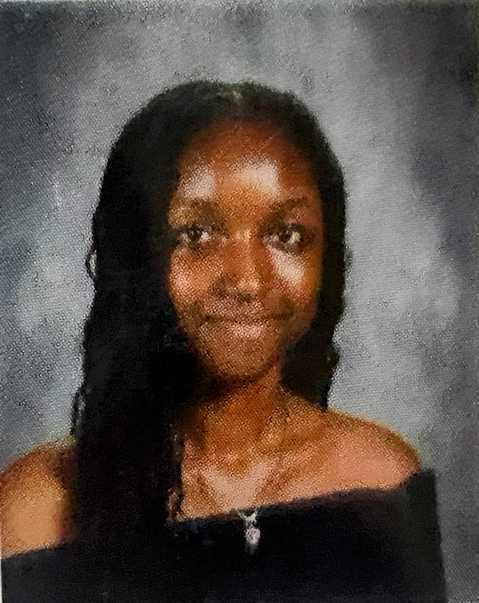

Preventing Wildfires
This project was made to inform people about the dangers of wildfires and how to prevent them.
Hi, my name is Raihana Abdul and I am currently a rising senior at Ben Davis Highschool. I plan on furthering my education, likely at IUI or IU Bloomington as they have been the main universities to peak my interest. I would describe myself as someone who is often eager towards learning more about the world/society as a whole and taking on risks individually. However, many times I am someone who tends to want to give up on myself especially when I feel unmotivated or stressed out. Honestly in recent years I have begun to tell myself to slow down and take a break when needed. As someone who has always been uncertain about choices I need to make that could potentially shape my future, understanding where I stand in life right now and questioning the steps I need to take to move further in life has been a major part of my life. Though I might seem like a really chaotic person right now, I know for sure what the future holds for me is nothing short of prosperity.

As I talked about earlier I often get stressed out and overstimulated, so a positive way I've chosen to combat those situations is by running. I’ve been running since I was in the 7th grade starting off with Track & Field, eventually moving onto XC recently. Needless to say it has honestly been a love-hate relationship with this sport over the course of several years, but given that I am still actively involved in running just shows how much I have grown with it over time. I have noticed that at least for me it isn’t something I directly enjoy when I’m being instructed on what I have to do but continuing it outside of these sports really allow me to appreciate the fun of it all.
I also take on a lot of interest in language and travelling, which are two interests of mine that go hand in hand. I have always been someone who enjoyed the idea of travelling and the feeling of getting to experience what you might call the unknown. Travelling not only allows you to experience immense diversity but it also gets you thinking about how life can be so different for people around the world. Language is also something that intrigues me because of how big communication is in life. I consider myself to be half bilingual, hoping to be able to develop fluency in many more languages like French and Korean.
I’ve talked about this earlier but I do plan on continuing my education towards a four year college after high school with my exact major still being highly uncertain but deciding. I can say that I want something that wouldn’t make me regret waking up every morning but also something that I can use to create an impact in my community and potentially people around the country. High ambitions, but hopefully not too long after I finish school I am able to have built up a sustainable income for me to actually be able to let go and experience the world the way little me enjoyed it.

I learned HTML during the Nextech program and have used it for many projects.
I learned CSS along with HTML during the Nextech program and have used it as a way for adding life to many of my projects.
I also learned JavaScript during the Nextech program and have used it as a way of developing interactive aspects with my projects.
In my early college CyberSecurity class at Ben Davis Highschool, I've learnt entry level Python coding working on things like variables, lists, strings, and print methods .
This project was made to inform people about the dangers of wildfires and how to prevent them.

This project is a simple game where the player controls Spider-Man to escape from danger. Or not!
If you would like to contact me, please feel free to reach out to me through my email by leaving a message in the form below. I will try to respond as soon as possible.